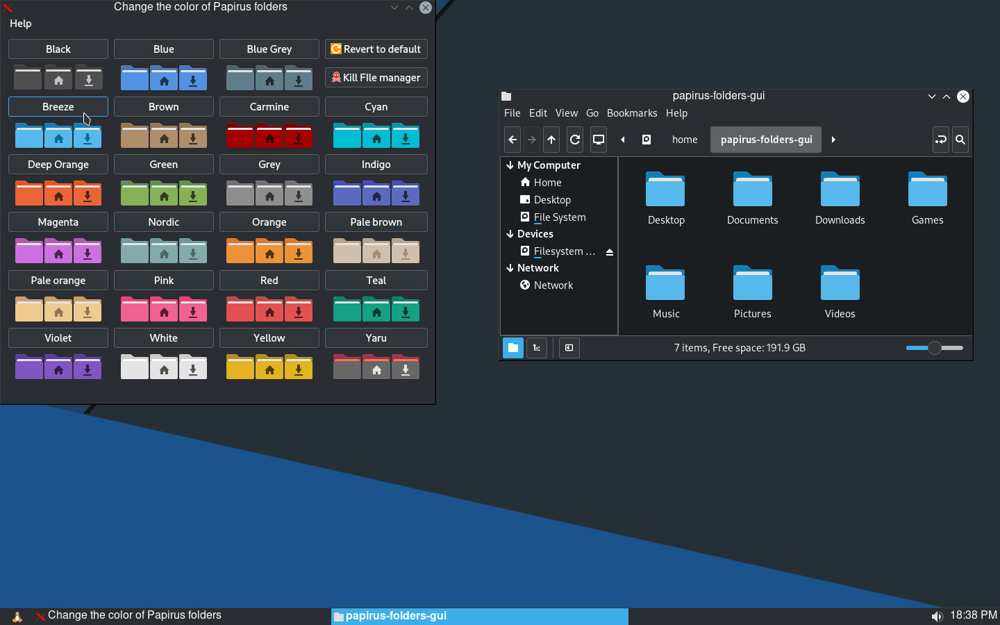
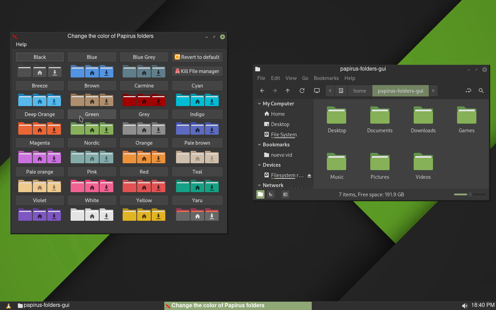

papirus-folders-gui
Download Star Issuepapirus-folders-gui is a program that lets you change the folder color of papirus-folders
 
Installation
you can download latest release from Releases pageDepedencies
to run this program you need:•qt5-base
•polkit-gnome(only on Window Managers)